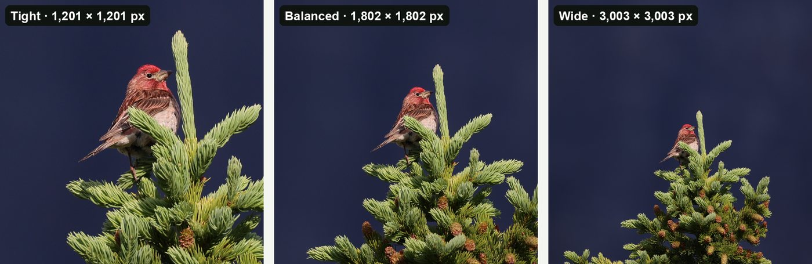

Guides · Updated 30 October 2026
How much can you crop a bird photo?
You can crop a bird photo as far as you like, as long as enough pixels are left for where it's going: about 2,000 pixels across is plenty for screens and sharing, and 3,000 × 2,000 pixels makes a sharp 10 × 6.7 inch print at 300 ppi. Cropping doesn't lower the quality of the pixels you keep; it only leaves fewer of them, so crop the full-size original and never enlarge the result.
Short answer: divide the pixels you have left by the print resolution to get the print size. 3,000 × 2,000 pixels is 10 × 6.7 inches at 300 ppi, or 12.5 × 8.3 inches at 240 ppi. For screens and sharing, about 2,000 pixels on the long side is plenty. On a 24-megapixel camera you can crop to half the frame's width and height and still have those 3,000 × 2,000 pixels. If your crops keep coming up short, a teleconverter or getting closer puts more pixels on the bird: halving the distance roughly doubles the pixels across it.
Cropping removes pixels; it doesn't spoil them
A crop throws away the parts of the frame around the bird. The pixels that are left are exactly as sharp as they were; there are just fewer of them, so a crop shown as big as the whole photo magnifies any blur or noise along with the bird. Detail itself gets lost in other ways:
- Cropping a smaller copy. A 24-megapixel photo exported at 2,048 pixels wide keeps about 12% of its pixels, and the bird shrinks with it. A crop of that copy can't get the detail back.
- Enlarging the crop. Resizing a crop upwards spreads the same detail over more pixels. Upscaling tools go further and invent detail, and eBird (editing policy) and iNaturalist (help) don't accept photos enlarged that way.
- Saving a JPEG over and over. Each save compresses the picture again. Crop once, from the original, and resize only at the very end, for the place you're posting it.
How big can you print a crop?
Print size is the number of pixels divided by the print resolution, in pixels per inch (ppi, often called dpi):
300 ppi is the usual target for a print you'll look at up close. 240 ppi is a common lower target that still looks sharp at arm's length, and a big print seen from across a room needs fewer pixels per inch still.
| Pixels left after the crop | Megapixels | Print at 300 ppi | Print at 240 ppi |
|---|---|---|---|
| 6,000 × 4,000 | 24 | 20 × 13.3 in | 25 × 16.7 in |
| 4,500 × 3,000 | 13.5 | 15 × 10 in | 18.8 × 12.5 in |
| 3,000 × 2,000 | 6 | 10 × 6.7 in | 12.5 × 8.3 in |
| 2,400 × 1,600 | 3.8 | 8 × 5.3 in | 10 × 6.7 in |
| 2,000 × 1,333 | 2.7 | 6.7 × 4.4 in | 8.3 × 5.6 in |
| 1,500 × 1,000 | 1.5 | 5 × 3.3 in | 6.3 × 4.2 in |
| 1,000 × 667 | 0.7 | 3.3 × 2.2 in | 4.2 × 2.8 in |
3:2 crops, the shape most cameras shoot. 1 inch is 2.54 cm, so 10 × 6.7 inches is about 25 × 17 cm. A square crop prints as a square: 1,800 × 1,800 pixels makes a 6-inch square at 300 ppi.
Working the other way: an 8 × 10 inch print needs 2,400 × 3,000 pixels (7.2 megapixels) at 300 ppi, or 1,920 × 2,400 (4.6 megapixels) at 240 ppi. A 4 × 6 inch print needs 1,200 × 1,800 (2.2 megapixels) at 300 ppi.

Screens and the web need fewer pixels
- Full HD and 4K screens are 1,920 × 1,080 and 3,840 × 2,160 pixels. A crop about 2,000 pixels wide fills a Full HD screen, and one about 3,840 pixels wide fills a 4K screen without being enlarged.
- iNaturalist stores photos at up to 2,048 pixels on the long side and shrinks anything bigger, so a crop under that size is kept as it is (why cropping first keeps more detail).
- Record shots can be much smaller. A few hundred pixels across a sharp bird is often enough to identify it.
Megapixels left after cropping, by camera
Cropping to half the frame's width and height keeps a quarter of the pixels; cropping to a third keeps a ninth. Here's what that leaves on four common sensor sizes:
| Camera (image size) | Crop to ½ of the width | Crop to ⅓ | Crop to ¼ |
|---|---|---|---|
| 24 MP (6,000 × 4,000) | 3,000 × 2,000 (6 MP) | 2,000 × 1,333 (2.7 MP) | 1,500 × 1,000 (1.5 MP) |
| 33 MP (7,008 × 4,672) | 3,504 × 2,336 (8.2 MP) | 2,336 × 1,557 (3.6 MP) | 1,752 × 1,168 (2 MP) |
| 45 MP (8,192 × 5,464) | 4,096 × 2,732 (11.2 MP) | 2,731 × 1,821 (5 MP) | 2,048 × 1,366 (2.8 MP) |
| 61 MP (9,504 × 6,336) | 4,752 × 3,168 (15.1 MP) | 3,168 × 2,112 (6.7 MP) | 2,376 × 1,584 (3.8 MP) |
Image sizes of the Canon EOS R6 Mark II, Sony A7 IV, Canon EOS R5 and Sony A7R V. The 61-megapixel camera's images are 9,504 × 6,336 pixels, or 60.2 megapixels.
So a 45-megapixel photo cropped to a third of its width leaves 5 megapixels, close to the 6 megapixels of a 24-megapixel photo cropped to half. Either is enough for a print of at least 9 × 6 inches at 300 ppi.
How small is the bird in a typical photo?
We measured it. In 1,995 public-domain bird photos from iNaturalist, the box around the main bird covered a median of 6.6% of the frame, and in 1 photo in 6 it covered less than 1% (the full study, with charts and data). On a 24-megapixel camera (6,000 × 4,000 pixels), that means:
- A typical bird, 6.6% of the frame, covers about 1.6 megapixels, a box roughly 1,250 pixels square. A Balanced crop, a square three times as wide as the bird's box, is roughly 3,750 × 3,750 pixels (14 megapixels): a 12.5-inch square print at 300 ppi.
- A small bird, 1% of the frame, covers 0.24 megapixels, a box about 490 pixels square. Its Balanced crop is about 1,470 × 1,470 pixels (2.2 megapixels): fine for a screen or iNaturalist, and a 4.9-inch square print at 300 ppi, or 6.1 inches at 240 ppi.
Many iNaturalist users crop before they upload, so frames straight out of a camera probably hold even smaller birds. With the bird this small a part of the frame, every pixel on it counts, which is why it matters so much to crop the full-size original rather than a copy.
Crop, teleconverter or get closer?
When the crop you want leaves too few pixels, there are three ways to get more of them onto the bird. How many pixels land across a bird follows from the lens and the distance:
| Same bird, same camera | Pixels across the bird | Tight crop (bird spans half the width) | Print at 300 ppi |
|---|---|---|---|
| 600 mm at 20 m, then cropped | 773 | 1,546 × 1,546 (2.4 MP) | 5.2 in square |
| 600 mm + 1.4× teleconverter at 20 m | 1,096 | 2,192 × 2,192 (4.8 MP) | 7.3 in square |
| 600 mm + 2× teleconverter at 20 m | 1,596 | 3,191 × 3,191 (10.2 MP) | 10.6 in square |
| 600 mm at 10 m (33 ft) | 1,596 | 3,191 × 3,191 (10.2 MP) | 10.6 in square |
- Cropping costs nothing in the field and keeps all your light, but it adds no pixels: it only discards the rest of the frame.
- A teleconverter multiplies the focal length. A 1.4× puts about 1.4 times as many pixels across the bird (about twice the area), and a 2× about twice as many (four times the area). It costs one stop of light (1.4×) or two (2×), can soften the image a little and slow focusing, so the extra pixels add real detail only with a sharp lens in good light.
- Getting closer beats both. Halve the distance and you roughly double the pixels across the bird, the same gain as a 2× teleconverter, with no light lost and less haze and heat shimmer between you and the bird.
To check your own setup, try the free bird reach calculator: choose a camera, lens, teleconverter, distance and species, and it shows how many pixels land on the bird and the crop you're left with at full resolution.
Cropping a whole trip from the full-size originals
Everything above assumes each crop is cut from the full-size original. That's easy for one photo and slow for a thousand. BirdFrame is a Mac app that finds the birds in a whole Apple Photos album or folder, including small, distant and half-hidden ones, and crops each one Tight, Balanced or Wide. It crops thousands of photos in one go, so there's no cropping by hand.
Every crop comes from the full-size original: nothing is downscaled, upscaled or generated, so the pixels you print are the ones your camera recorded. It reads JPEG, HEIC and RAW files, runs on your Mac with nothing uploaded, and is free for up to 50 photos per run. A one-time $29.99 unlocks bigger batches, and it needs macOS 15 or later.
Questions
Does cropping a photo reduce its quality?
No. Cropping removes the pixels around the bird and leaves the rest as they were, as long as you crop the full-size original. Quality drops when you crop a downscaled copy, enlarge the crop afterwards, or save a JPEG over and over.
How much can you crop a 24-megapixel photo?
Crop to half the frame's width and height and you still have 3,000 × 2,000 pixels (6 megapixels): a 10 × 6.7 inch print at 300 ppi, and more than a Full HD screen shows. Crop to a third and you have 2,000 × 1,333 (2.7 megapixels), still fine for screens and a 6.7 × 4.4 inch print.
How many pixels do I need for an 8 × 10 inch print?
2,400 × 3,000 pixels (7.2 megapixels) at 300 ppi, or 1,920 × 2,400 (4.6 megapixels) at 240 ppi, which still looks sharp at arm's length.
Is a teleconverter better than cropping?
Usually, with a sharp lens in good light. A 1.4× teleconverter puts about 1.4 times as many pixels across the bird and a 2× about twice as many, at a cost of one or two stops of light. Cropping adds no pixels. Getting closer beats both: halve the distance and you roughly double the pixels across the bird.
Crop every bird in one go, at full resolution. BirdFrame finds the birds in a whole album or folder and crops each one from the full-size original. Free for up to 50 photos per run.